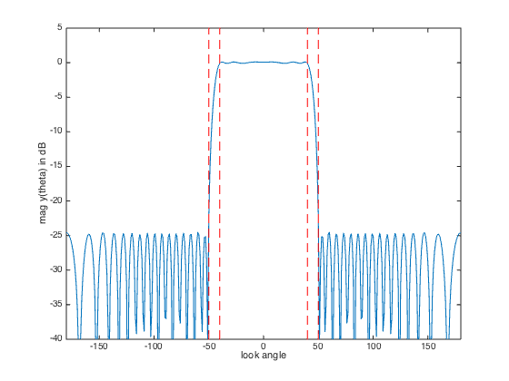
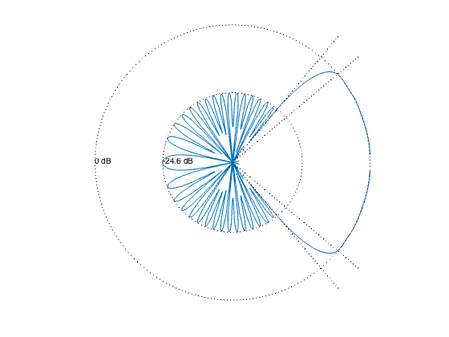

% "FIR Filter Design via Spectral Factorization and Convex Optimization" example % by S.-P. Wu, S. Boyd, and L. Vandenberghe % (figures are generated) % % Designs a uniform linear antenna array using spectral factorization method where: % - it minimizes sidelobe level outside the beamwidth of the pattern % - it has a constraint on the maximum ripple around unit gain in the beamwidth % % minimize max |y(theta)| for theta in the stop-beamwidth % s.t. 1/delta <= |y(theta)| <= delta for theta in the pass-beamwidth % % We first replace the look-angle variable theta with the "frequency" % variable omega, defined by omega = -2*pi*d/lambda*cos(theta). % This transforms the antenna pattern y(theta) into a standard discrete % Fourier transform of array weights w. Then we apply another change of % variables: we replace w with its auto-correlation coefficients r. % % Now the problem can be solved via spectral factorization approach: % % minimize max R(omega) for omega in the stopband % s.t. (1/delta)^2 <= R(omega) <= delta^2 for omega in the passband % R(omega) >= 0 for all omega % % where R(omega) is the squared magnitude of the y(theta) array response % (and the Fourier transform of the autocorrelation coefficients r). % Variables are coefficients r. delta is the allowed passband ripple. % This is a convex problem (can be formulated as an LP after sampling). % % Written for CVX by Almir Mutapcic 02/02/06 %******************************************************************** % problem specs: a uniform line array with inter-element spacing d % antenna element locations are at d*[0:n-1] % (the array pattern will be symmetric around origin) %******************************************************************** n = 20; % number of antenna elements lambda = 1; % wavelength d = 0.45*lambda; % inter-element spacing % passband direction from 30 to 60 degrees (30 degrees bandwidth) % transition band is 15 degrees on both sides of the passband theta_pass = 40; theta_stop = 50; % passband max allowed ripple ripple = 0.1; % in dB (+/- around the unit gain) %******************************************************************** % construct optimization data %******************************************************************** % number of frequency samples m = 30*n; % convert passband and stopband angles into omega frequencies omega_zero = -2*pi*d/lambda; omega_pass = -2*pi*d/lambda*cos(theta_pass*pi/180); omega_stop = -2*pi*d/lambda*cos(theta_stop*pi/180); omega_pi = +2*pi*d/lambda; % build matrix A that relates R(omega) and r, ie, R = A*r omega = linspace(-pi,pi,m)'; A = exp( -j*omega(:)*[1-n:n-1] ); % passband constraint matrix Ap = A(omega >= omega_zero & omega <= omega_pass,:); % stopband constraint matrix As = A(omega >= omega_stop & omega <= omega_pi,:); %******************************************************************** % formulate and solve the magnitude design problem %******************************************************************** cvx_begin variable r(2*n-1,1) complex % minimize stopband attenuation minimize( max( real( As*r ) ) ) subject to % passband ripple constraints (10^(-ripple/20))^2 <= real( Ap*r ) <= (10^(+ripple/20))^2; % nonnegative-real constraint for all frequencies % a bit redundant: the passband frequencies are already constrained real( A*r ) >= 0; % auto-correlation symmetry constraints imag(r(n)) == 0; r(n-1:-1:1) == conj(r(n+1:end)); cvx_end % check if problem was successfully solved if ~strfind(cvx_status,'Solved') return end % find antenna weights by computing the spectral factorization w = spectral_fact(r); % divided by 2 since this is in PSD domain min_sidelobe_level = 10*log10( cvx_optval ); fprintf(1,'The minimum sidelobe level is %3.2f dB.\n\n',... min_sidelobe_level); %******************************************************************** % plots %******************************************************************** % build matrix G that relates y(theta) and w, ie, y = G*w theta = [-180:180]'; G = kron( cos(pi*theta/180), [0:n-1] ); G = exp(2*pi*i*d/lambda*G); y = G*w; % plot array pattern figure(1), clf ymin = -40; ymax = 5; plot([-180:180], 20*log10(abs(y)), ... [theta_stop theta_stop],[ymin ymax],'r--',... [-theta_pass -theta_pass],[ymin ymax],'r--',... [-theta_stop -theta_stop],[ymin ymax],'r--',... [theta_pass theta_pass],[ymin ymax],'r--'); xlabel('look angle'), ylabel('mag y(theta) in dB'); axis([-180 180 ymin ymax]); % polar plot figure(2), clf zerodB = 50; dBY = 20*log10(abs(y)) + zerodB; plot(dBY.*cos(pi*theta/180), dBY.*sin(pi*theta/180), '-'); axis([-zerodB zerodB -zerodB zerodB]), axis('off'), axis('square') hold on plot(zerodB*cos(pi*theta/180),zerodB*sin(pi*theta/180),'k:') % 0 dB plot( (min_sidelobe_level + zerodB)*cos(pi*theta/180), ... (min_sidelobe_level + zerodB)*sin(pi*theta/180),'k:') % min level text(-zerodB,0,'0 dB') text(-(min_sidelobe_level + zerodB),0,sprintf('%0.1f dB',min_sidelobe_level)); plot([0 60*cos(theta_pass*pi/180)], [0 60*sin(theta_pass*pi/180)], 'k:') plot([0 60*cos(-theta_pass*pi/180)],[0 60*sin(-theta_pass*pi/180)],'k:') plot([0 60*cos(theta_stop*pi/180)], [0 60*sin(theta_stop*pi/180)], 'k:') plot([0 60*cos(-theta_stop*pi/180)],[0 60*sin(-theta_stop*pi/180)],'k:') hold off
Calling SDPT3 4.0: 1171 variables, 40 equality constraints
For improved efficiency, SDPT3 is solving the dual problem.
------------------------------------------------------------
num. of constraints = 40
dim. of linear var = 1171
*******************************************************************
SDPT3: Infeasible path-following algorithms
*******************************************************************
version predcorr gam expon scale_data
NT 1 0.000 1 0
it pstep dstep pinfeas dinfeas gap prim-obj dual-obj cputime
-------------------------------------------------------------------
0|0.000|0.000|1.0e+04|1.4e+02|2.0e+06| 1.008655e+02 0.000000e+00| 0:0:00| chol 1 1
1|0.875|0.762|1.3e+03|3.4e+01|3.1e+05| 1.707706e+03 -8.318726e+01| 0:0:00| chol 1 1
2|0.763|0.812|3.0e+02|6.5e+00|8.5e+04| 2.032831e+03 -1.284834e+02| 0:0:00| chol 1 1
3|0.879|0.798|3.6e+01|1.3e+00|1.4e+04| 1.364175e+03 -1.494646e+02| 0:0:00| chol 1 1
4|0.662|0.834|1.2e+01|2.3e-01|5.5e+03| 8.085569e+02 -2.002852e+02| 0:0:00| chol 1 1
5|0.934|1.000|8.1e-01|2.4e-03|6.0e+02| 1.565080e+02 -1.927015e+02| 0:0:00| chol 2 2
6|0.903|0.981|7.9e-02|2.8e-04|1.1e+02| 2.233473e+01 -7.632890e+01| 0:0:00| chol 2 2
7|0.862|1.000|1.1e-02|1.6e-02|6.9e+01| 1.487219e+01 -5.065246e+01| 0:0:00| chol 1 1
8|0.930|0.941|7.7e-04|3.1e-03|4.5e+00| 1.679599e+00 -2.798362e+00| 0:0:00| chol 1 1
9|0.473|0.949|4.0e-04|3.1e-04|2.4e+00| 9.986219e-01 -1.431647e+00| 0:0:00| chol 1 1
10|0.872|1.000|5.2e-05|8.1e-05|1.2e+00| 2.761667e-01 -8.786424e-01| 0:0:00| chol 1 1
11|0.951|0.988|2.5e-06|1.1e-05|1.9e-01| 6.218113e-02 -1.316351e-01| 0:0:00| chol 1 1
12|0.662|1.000|8.5e-07|5.0e-07|8.7e-02| 2.910117e-02 -5.759656e-02| 0:0:00| chol 1 1
13|0.847|0.705|1.3e-07|3.2e-07|4.4e-02| 8.825548e-03 -3.492830e-02| 0:0:00| chol 1 1
14|1.000|0.570|5.6e-14|1.6e-07|2.9e-02| 4.098110e-03 -2.443245e-02| 0:0:00| chol 1 1
15|1.000|1.000|4.2e-14|1.2e-12|1.4e-02| 2.591040e-03 -1.164488e-02| 0:0:00| chol 1 1
16|1.000|0.990|3.6e-14|1.0e-12|6.3e-03| 3.772454e-04 -5.904202e-03| 0:0:00| chol 1 1
17|0.404|1.000|7.4e-14|1.0e-12|4.7e-03|-4.331405e-04 -5.174142e-03| 0:0:00| chol 1 1
18|0.807|1.000|9.9e-14|1.0e-12|2.4e-03|-1.819613e-03 -4.250844e-03| 0:0:00| chol 1 1
19|0.980|0.981|6.3e-13|1.0e-12|7.3e-04|-2.854651e-03 -3.581003e-03| 0:0:00| chol 1 1
20|0.572|0.971|3.7e-12|1.0e-12|3.6e-04|-3.103962e-03 -3.459133e-03| 0:0:00| chol 1 1
21|0.827|0.950|7.7e-13|1.1e-12|9.7e-05|-3.339091e-03 -3.436323e-03| 0:0:00| chol 1 1
22|0.970|0.894|6.4e-12|1.1e-12|9.6e-06|-3.419536e-03 -3.429101e-03| 0:0:00| chol 1 1
23|0.866|0.886|2.5e-12|1.4e-12|1.8e-06|-3.426509e-03 -3.428273e-03| 0:0:00| chol 1 1
24|0.979|0.983|1.5e-12|1.0e-12|8.9e-08|-3.428062e-03 -3.428151e-03| 0:0:00| chol 1 1
25|0.992|0.993|1.3e-12|1.0e-12|1.8e-09|-3.428145e-03 -3.428147e-03| 0:0:00|
stop: max(relative gap, infeasibilities) < 1.49e-08
-------------------------------------------------------------------
number of iterations = 25
primal objective value = -3.42814510e-03
dual objective value = -3.42814686e-03
gap := trace(XZ) = 1.76e-09
relative gap = 1.74e-09
actual relative gap = 1.74e-09
rel. primal infeas (scaled problem) = 1.30e-12
rel. dual " " " = 1.01e-12
rel. primal infeas (unscaled problem) = 0.00e+00
rel. dual " " " = 0.00e+00
norm(X), norm(y), norm(Z) = 7.2e-01, 2.9e-01, 9.2e+00
norm(A), norm(b), norm(C) = 3.0e+02, 2.0e+00, 1.2e+01
Total CPU time (secs) = 0.31
CPU time per iteration = 0.01
termination code = 0
DIMACS: 1.3e-12 0.0e+00 6.1e-12 0.0e+00 1.7e-09 1.7e-09
-------------------------------------------------------------------
------------------------------------------------------------
Status: Solved
Optimal value (cvx_optval): +0.00342815
The minimum sidelobe level is -24.65 dB.
 